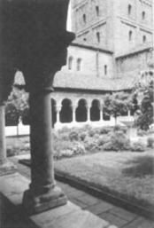
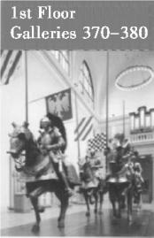
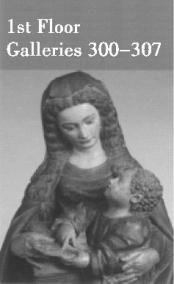
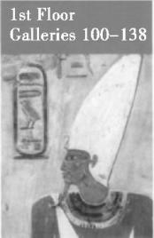

07-2018江苏，A
The Metropolitan Museum of Art
1000 Fifth Avenue New York, NY 10028
211-535-7710 www.metmuseum.org
Entrances
Fifth Avenue at 82nd Street
Hours
Open 7 days a week.
Sunday—Thursday 10:00—17:30
Friday and Saturday 10:00—21:00
Closed Thanksgiving Day, December 25,
January 1, and the first Monday in May.

Admission
$25.00 recommended for adults, $12.00 recommended for students, includes the Main Building and The Cloisters(回廊)on the same day;free for children under 12 with an adult.
Free with Admission
All special exhibitions, as well as films, lectures, guided tours, concerts, gallery talks, and family/childrens programs are free with admission.

Ask about todays activities at the Great Hall Information Desk.
The Cloisters Museum and Gardens
The Cloisters museum and gardens is a branch of The Metropolitan Museum of Art devoted to the art and architecture of Europe in the Middle Ages. The extensive collection consists of masterworks in sculpture, colored glass, and precious objects from Europe dating from about the 9th to the 15th century.

Hours:Open 7 days a week.
March—October 10:00—17:15
November—February 10:00—16:45
Closed Thanksgiving Day, December 25, and January 1.

全部题目与逐题讲解
- A.$12.
- B.$37.
- C.$50.
- D.$62.
查看答案与讲解
答案：C
1.C 细节理解题。题干句意:如果一个11岁的女孩和她的在职父母参观博物馆,他们可能需要支付多少钱?根据文中Admission部分的$25.00 recommended for adults(建议成年人每人25美元)和free for children under 12 with an adult(一位成年人带一个12岁以下的孩子,孩子免费)可知,他们共需支付:$25+$25+$0=$50,故选C项。
- A.it opens all the year round
- B.its collections date from the Middle Ages
- C.it has a modern European-style garden
- D.it sells excellent European glass collections
查看答案与讲解
答案：B
2.B 细节理解题。根据题干中的the Cloisters museum and gardens可以直接定位到文中的The Cloisters Museum and Gardens部分。根据该部分第一句中的devoted to the art and architecture of Europe in the Middle Ages(关于欧洲中世纪的艺术和建筑)可确定答案为B项。根据Closed Thanksgiving Day, December 25, and January 1.可知A项错误;C项和D项原文未涉及,故应排除。
本篇暂无未重复外刊。